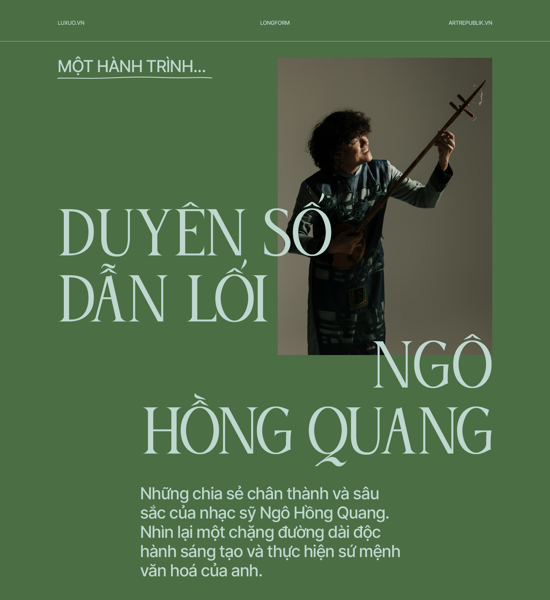
“Một hành trình…” là cuộc trò chuyện giữa Thụy Phương với các văn nghệ sỹ nhằm kể
lại cho độc giả một hành trình đời, sống và sáng tác, mà họ đã đi qua. Chặng đường đó đã
giúp họ định vị vững vàng trong lĩnh vực của mình (văn chương, hội họa, nghệ thuật,
nghiên cứu, v.v.). Những gì họ đang làm trong hiện tại và dự định cho tương lai sẽ giúp
chúng ta hiểu sự tìm tòi và làm mới bản thân, cũng như đóng góp của những nghệ sỹ và
trí thức này trong lĩnh vực mà họ là chuyên gia và một cách gián tiếp đóng góp của họ
cho xã hội. Qua những bức chân dung này, hi vọng giúp độc giả hiểu hơn về bản sắc cá
nhân của họ (tâm tư, băn khoăn, cảm xúc) bên ngoài trang giấy, sàn diễn hay giá vẽ.
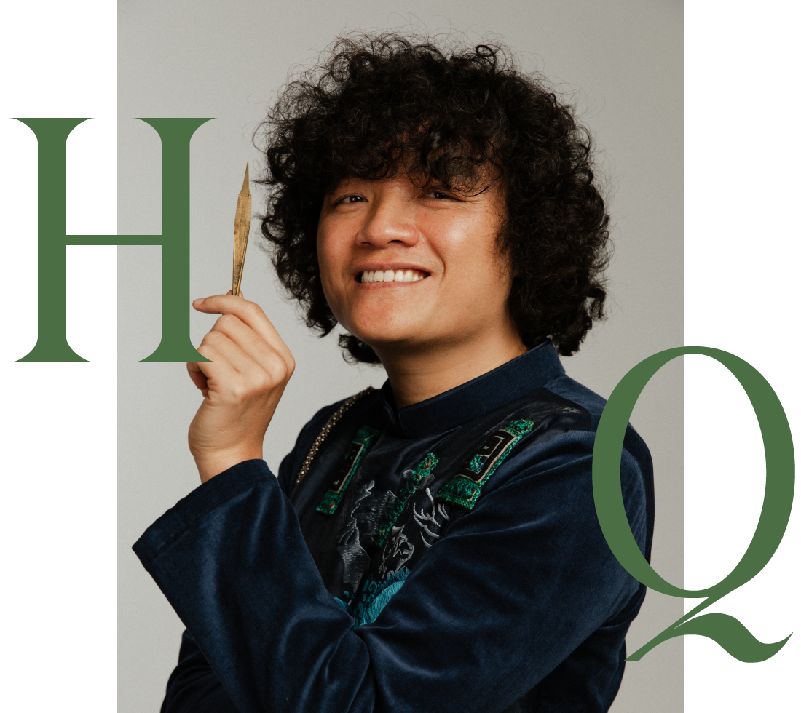
Sinh ra trong một gia đình có truyền thống nghệ thuật, Ngô Hồng Quang sớm bộc lộ năng
khiếu âm nhạc và được dẫn dắt, tiếp cận đến với nhạc cụ dân tộc từ khi còn nhỏ. Hoạt
động nghệ thuật với vai trò vừa là nhạc công, nhạc sỹ lẫn ca sỹ, Ngô Hồng Quang được vinh
danh là một trong những nghệ sỹ đương đại hàng đầu Việt Nam, với nhiều đóng góp có sức
ảnh hưởng quan trọng và truyền cảm hứng cho thế hệ sau.
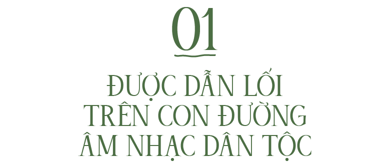
Anh quyết định đi học Nhạc Viện Hà Nội
trong bối cảnh như thế nào?
Từ lúc 7 tuổi tới 11 tuổi là khoảng thời gian gia đình tôi phát hiện ra khả năng âm nhạc của
tôi, đặc biệt là bố tôi. Khi tham gia các hoạt động văn hoá văn nghệ của thôn xóm, tôi luôn
được chọn là người biểu diễn hát, đặc biệt là những bài dân ca đồng bằng Bắc bộ. Ngoài
việc thừa hưởng năng khiếu và khả năng thẩm âm của ông nội, thì bố tôi cũng là người rèn
giũa và tu luyện thêm cho tôi về cách tiếp cận cũng như hướng tôi tới môi trường âm nhạc
dân tộc. Thực tế thì bố là người chọn cho tôi học nhạc chuyên nghiệp. Câu chuyện âm nhạc
chuyên nghiệp bắt đầu từ lúc 11 tuổi, khi bố cho tôi lên nhạc viện ôn luyện vài tháng trước
khi trúng tuyển vào khoa âm nhạc truyền thống tại Nhạc Viện Hà Nội. Ngoài sự tác động
của bố mẹ, còn một người bác khiếm thị là con nuôi ông nội, là người thầy đầu tiên tạo nên
những bước đi đầu tiên của tôi.
Anh chọn học nhạc cụ gì? Ở thời điểm đó, anh có nghĩ theo
nghiệp âm nhạc trọn đời không?
Tôi học đàn Nhị với 2 lý do: một là do ông nội tôi chơi nhạc cụ này và truyền dạy lại cho
người con nuôi khiếm thị của ông, và tôi được học từ bác; hai là bố tôi thích nhạc cụ truyền
thống và nhân tiện nhà có ông chơi đàn Cò nên bố đã hướng cho tôi theo đuổi nhạc cụ này.
Ở thời điểm mới bước chân vào trường nhạc, tôi khá mông lung, chỉ nghĩ thôi cứ học nếu
không phù hợp thì sẽ chuyển sang lĩnh vực khác, vì quả thực tôi không phải là người quyết
định việc đi học, và thực sự vẫn chưa biết mình muốn gì ngoài việc chỉ biết là mình thích
âm nhạc truyền thống.
Những năm tháng học tại Nhạc Viện, anh say sưa điều gì? Anh bị “vỡ mộng” điều gì
không? Hay anh có ao ước gì cho tương lai ở giai đoạn đó?
Thời gian đầu học ở trường nhạc thì tôi chỉ say sưa việc được về quê vì đi xa nhà từ bé và
nhớ bố mẹ lắm! Thời gian sau, bắt đầu quen với môi trường âm nhạc, có nhiều bạn bè hơn,
nghe được nhiều nhạc cụ và thể loại âm nhạc mới lạ hơn, từ đó bắt đầu hứng thú với thế
giới âm nhạc hơn và quan tâm tới nhiều thể loại âm nhạc khác nhau. Có nhiều thứ yêu
thích trong âm nhạc nhưng vẫn cảm thấy gần gũi, ấm cúng và được là mình nhất khi sống
trong môi trường âm nhạc dân tộc, một phần vì được học những giai điệu quen thuộc từ
trước, một phần vì các bạn đồng niên cũng có tính cách và tình yêu âm nhạc,văn hoá
truyền thống giống mình. Mọi thứ rất tự nhiên và cứ thế dẫn lối cho tôi đi trên con đường
âm nhạc dân tộc tới tận ngày nay.
Tôi vỡ mộng đôi lúc trong 2 – 3 năm đầu tiên với một số lý do. Môi trường học lạ lẫm quá,
nhiều người ở cùng phòng quá (KTX), chương trình học dài quá (12 năm), học nhạc cụ này
thì sẽ làm gì khi ra trường? Có làm được trong các nhà hát, được làm nghệ sĩ, hay thất
nghiệp, về phường bát âm? Những câu hỏi luẩn quẩn này xảy ra với khá nhiều học sinh
nhạc cụ dân tộc trong những năm đầu tiên. Nhiều người đã không vượt qua được những
hàng rào này và bỏ cuộc giữa chừng hoặc đi hết nhưng không làm nghề.
Vài ba năm sau thì tư tưởng của tôi khác đi, qua quá trình học, thấy mình là người con
ngoan, chăm chỉ và cũng có tinh thần hướng thượng muốn vươn tới những thứ mà người
khác không dám nghĩ tới; trở thành giáo viên ở trường (cứu cánh), trở thành nghệ sĩ tự do
(hơi mông lung), được đi du học để phát triển bản thân và đưa âm nhạc dân tộc ra thế giới,
trở thành nhà âm nhạc dân tộc học (giống bác Trần Văn Khê). Có nhiều mơ ước nhưng mơ
ước lớn nhất lúc đó vẫn là trở thành giáo viên dạy về đàn Nhị, cũng chính là nhạc cụ mà
tôi đã học.
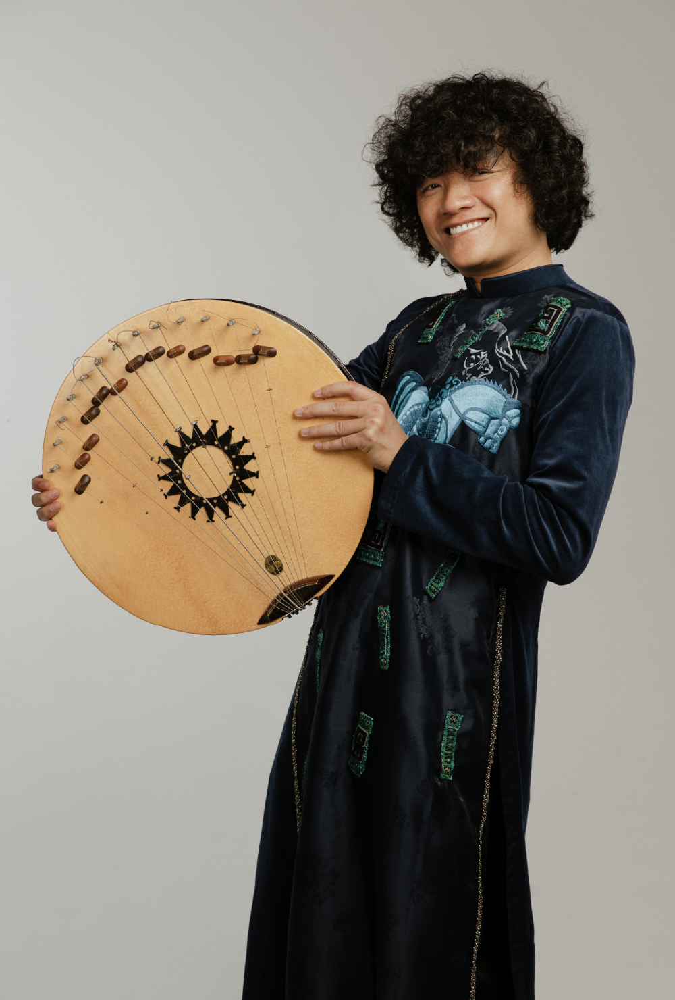
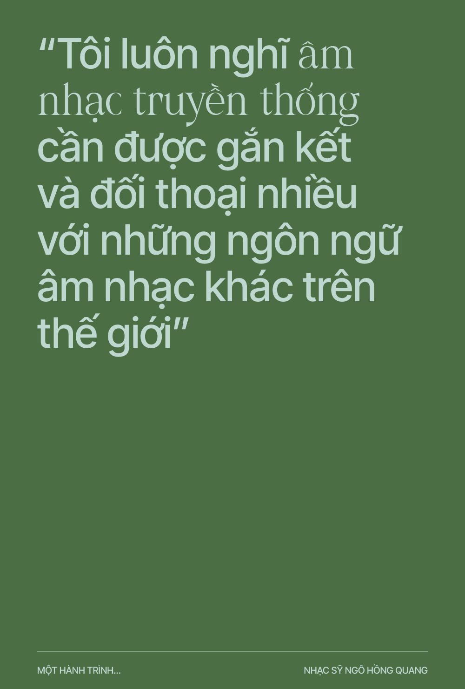
Vì sao anh quyết định đi tu nghiệp ở nước ngoài?
Tôi chọn học ở nước ngoài với mấy lý do: Được phát triển bản thân, muốn sống và làm việc
một cách tự do nhất. Tôi chọn học sáng tác vì nó là bộ môn sáng tạo, một chuyên môn khác
hẳn những gì tôi đã được đào tạo ở Nhạc Viện. Tôi muốn mình thay đổi, muốn mình có tư
duy và tự sáng tạo ra những không gian âm nhạc của riêng mình, và tự biểu diễn thứ âm
nhạc riêng biệt đó. Hơn nữa, đi tu nghiệp ở nước ngoài còn cho tôi nhiều cơ hội khác về
âm nhạc, như kết nối với nhiều nghệ sĩ trên thế giới để học tập và chia sẻ kinh nghiệm âm
nhạc với nhau, được làm những dự án âm nhạc mới lạ, mang tính quốc tế. Điều này chỉ có
thể sống và học tập ở môi trường quốc tế mới có thể có cơ hội được. Quan trọng hơn nữa là
môi trường giáo dục của nước ngoài luôn luôn nghiêm túc và đầy đủ điều kiện, tiện nghi
cho sinh viên tự học và phát triển độc lập tư duy, để có thể trở thành những người nghệ sĩ
sống tự do và tự chủ về sáng tạo. Quả thực môi trường sáng tạo tại ngôi trường mà tôi theo
học đã cho tôi sự tự do đó, và dẫn tôi đi tới những gì tôi mong muốn trên con đường sự
nghiệp của mình.
Anh đã chọn Hà Lan là điểm đến đầu tiên, đúng không?
Vì sao là đất nước này?
Tôi chọn Hà Lan vì đây là đất nước rất phát triển và cởi mở trong giáo dục và sáng tạo.
Ngoài việc tạo điều kiện tốt cho sinh viên phát huy hết khả năng sáng tạo và trau dồi kiến
thức, Hà Lan còn là đất nước có môi trường sống rất tốt với hệ sinh thái hài hoà, nhiều cây
xanh và rất thanh bình. Trường của tôi không những thích ý tưởng về kế hoạch học tập
của tôi mà còn trao học bổng cho tôi để có đủ điều kiện học tập và phát triển nghề nghiệp.
Đây là một nguồn động lực vô cùng to lớn và mang nhiều ý nghĩa nhân văn. Tôi trở nên
yêu đất nước này với sự đùm bọc và hỗ trợ thiết thực của họ. Tôi đã trải qua một quãng
thời gian khá dài với nhiều thử thách cũng như những kỉ niệm không thể quên, những
điều này rất cần thiết và là chất xúc tác quan trọng trong việc hình thành tính cách âm
nhạc, cũng như xây dựng kinh nghiệm trên con đường âm nhạc đầy thử thách mà tôi đã
lựa chọn.
Sau đó, anh đến những quốc gia nào nữa? Nơi biểu diễn nào
đã trở thành kỉ niệm hay tạo xúc cảm không phai mờ với anh?
Tôi tới rất nhiều nơi trên thế giới, hầu như là cả 5 châu lục tôi đều đã đặt chân tới. Chuyến
đi nào cũng là biểu diễn nhạc cụ và văn hoá âm nhạc Việt Nam, có lúc là kết hợp với nhạc
jazz, có những lúc tôi biểu diễn một mình một show, và nhiều lúc là những buổi chia sẻ và
nói chuyện về âm nhạc dân tộc trong những trường nhạc.
Nếu nói về những chuyến biểu diễn mà có nhiều cảm xúc nhất, có lẽ có một vài chương
trình tại một số nước mà tôi không thể nào quên được, nhưng tôi xin chia sẻ một buổi diễn
cảm động nhất trong sự nghiệp biểu diễn của tôi, đó là show diễn tại Annecy (Pháp). Trong
show diễn dài hơn 1 tiếng đồng hồ, không có một tiếng động hay cười nói, nhưng khi hết
show, cả không gian nhà hát như vỡ oà bởi sự hân hoan không ngớt của vài trăm khán giả.
Họ không cầm được nước mắt sau khi thưởng thức show âm nhạc đầy cảm xúc và chạm
đúng vào khoảnh khắc họ cần. Tôi có cảm giác như thứ âm nhạc mà mình và ban nhạc
cùng chơi đã hàn gắn những vết thương, kết nối họ với thực tại, bởi họ vừa trải qua những
nỗi đau buồn sau một trận nổ súng tại toà soạn báo ở Paris[1]. Họ vỗ tay không ngớt, họ đưa
chúng tôi vào một cảm giác thăng hoa tột độ, chúng tôi ra chào gần 10 lần để tri ân sự ủng
hộ và hưởng ứng của họ. Thực sự là một đêm nhạc không thể quên trong sự nghiệp biểu
diễn âm nhạc của tôi. Với khán giả Pháp thì tôi luôn nghĩ, âm nhạc dân tộc Việt Nam luôn
chiếm một vị trí quan trọng trong trái tim của họ.
[1] Cuộc khủng bố tại tòa soạn báo Charlie Hebdo ở Paris, Pháp, ngày 7 tháng 1 năm 2015.
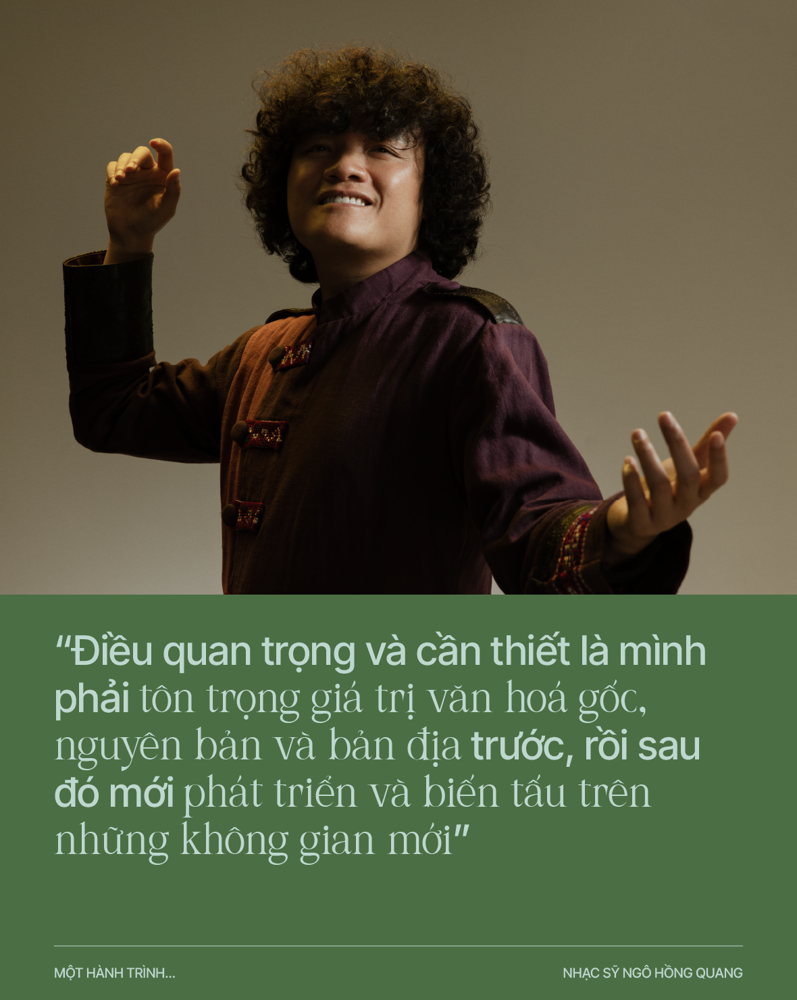
Lần hợp tác với Nguyên Lê, sáng tác và lưu diễn ở Pháp, Việt Nam
và các quốc gia khác, chắc hẳn là cột mốc trong sự nghiệp âm nhạc của
anh?! Nguyên Lê là một huyền thoại âm nhạc ở Pháp, là một trong những
nhạc sỹ jazz và world music sáng tạo nhất thế giới, và là “đại sứ” của nhạc
Việt truyền thống trên thế giới, vậy kết hợp giữa anh và Nguyên Lê cộng
hưởng cho nhau như thế nào?
Cuộc gặp gỡ giữa tôi và anh Nguyên Lê quả thực là một cái duyên lớn. Trong cuộc đời âm
nhạc của anh Nguyên Lê, anh chưa một lần gặp người nghệ sĩ Việt nào như tôi. Anh rất bất
ngờ về khả năng chơi đa dạng các loại nhạc cụ dân tộc Việt Nam, hát và sáng tác của tôi,
anh còn nói trong hơn 20 năm đi tìm kiếm một người nghệ sĩ Việt trẻ, với đủ điều kiện về
khả năng âm nhạc để đáp ứng được các yêu cầu về chuyên môn trong các tác phẩm nhạc
của anh, thì anh chưa tìm thấy ai. Thực sự may mắn, tôi đã gặp anh Nguyên Lê và kết nối
với anh ấy qua âm nhạc một cách dễ dàng, và đúng như những gì anh mong muốn. Tôi
thấy việc gặp gỡ này là có sự sắp đặt trước để chúng tôi thực hiện dự án âm nhạc Việt Nam
với nhau, đưa âm nhạc Việt ra thế giới theo cách của chúng tôi, và tôn vinh những giá trị
văn hoá của người Việt một cách sáng tạo, bay bổng hơn.
Anh Nguyên Lê là người rất cẩn thận, chỉn chu và cầu toàn về vấn đề âm nhạc. Anh là
người nghệ sĩ thế giới, anh đã cộng tác với rất nhiều nghệ sĩ đa quốc gia nên khả năng nhận
biết và cởi mở trong âm nhạc của anh rất cao. Mỗi một tác phẩm trong album Hanoi Duo
của tôi và anh Nguyên Lê đều ẩn chứa rất nhiều giá trị văn hoá âm nhạc khác nhau. Có
những lúc là sự cộng hưởng của tiết tấu châu Phi với nền hoà âm jazz đương đại, kết hợp
với những đường nét giai điệu ngũ cung của phía Bắc Việt Nam. Một số tác phẩm mang âm
hưởng âm nhạc miền núi phía Bắc Việt Nam thì được kết hợp nhạc điện tử, và những ngón
đàn guitar điêu luyện bay bổng do anh thể hiện. Thi thoảng có những khúc ca êm dịu chỉ
có guitar và giọng hát, nhưng được phối âm với màu hòa thanh nghịch nhằm tạo không
gian đa chiều. Nhiều tác phẩm hoà tấu có sự góp mặt của các nhạc cụ dân tộc Ấn Độ (trống
Tabla), Nhật Bản (Koto), bộ gõ, v.v. như để thể hiện sự không biên giới trong âm nhạc.
Trong album này, tôi thấy sự sáng tạo của anh Nguyên Lê là vô biên, anh cởi mở đón nhận
tất cả các yếu tố văn hoá âm nhạc ngoại lại, hoà điệu nó vào các làn điệu dân ca và những
ca khúc mang âm hưởng dân gian, kết hợp một cách đầy ngẫu hứng với các nhạc cụ lạ của
thế giới để tạo ra sự đồng điệu. Trong không gian bao la của thứ âm nhạc không biên giới
này, người nghe có thể tìm thấy tất cả mọi thứ gắn kết con người: tình yêu, thiên nhiên, đất
nước, con người, và hơn hết là sự kết nối văn hoá đại đồng, mà chỉ có thể được tạo ra từ
những người nghệ sĩ đích thực, yêu cuộc sống và làm nghệ thuật chân chính! Qua dự án
này, tôi đã học hỏi được nhiều điều và nó cũng mang lại cho tôi nhiều thứ trong cuộc sống,
để làm hành trang bước tiếp trên những chặng đường tiếp theo.
Với tư cách là nhà sáng tác, anh đã làm như thế nào để các thể loại xẩm, lý hay làn
điệu chèo hôn phối với jazz, như trong “Mục hạ vô nhân” (Nguyên Lê chuyển
soạn), “Lới lơ”, “Lý ngựa ô” (Onno Krijn chuyển soạn), v.v.?
Nếu chỉ là một người biểu diễn thì có lẽ việc kết hợp với các nhạc sĩ nước ngoài sẽ không
dễ dàng chút nào. May mắn của tôi là đã được tiếp cận với nền văn hoá âm nhạc phương
Tây trên nhiều phương diện khác nhau. Vừa là người biểu diễn, vừa học cơ bản về sáng tác
theo hình thức cổ điển, vừa học phương pháp sáng tác âm nhạc đương đại, đồng thời cũng
sống trong môi trường có nhiều nghệ sĩ quốc tế. Tôi đã tháo gỡ những rào cản về mặt văn
hoá để có thể hoà hợp và hội nhập vào thế giới âm nhạc chung. Điều này rất quan trọng để
một người nghệ sĩ có thể thoả chí tang bồng, đem cái của mình chia sẻ cho người khác, và
đón nhận văn hoá của người khác như đón nhận văn hoá của mình.
Những tác phẩm chèo, xẩm hay dân ca các vùng miền, tôi đã nghiên cứu, phân tích kỹ
trước khi đem ra kết hợp và làm dự án. Mỗi vùng miền thì có chất liệu và yếu tố hoa mỹ
riêng biệt, nên càng hiểu nhiều về cách luyến láy trong âm nhạc ngũ cung các khu vực của
Việt Nam, càng dễ để nó hoà nhập hài hoà vào các không gian âm nhạc khác nhau. Điều
quan trọng và cần thiết là mình phải tôn trọng giá trị văn hoá gốc, nguyên bản và bản địa
trước, rồi sau đó mới phát triển và biến tấu trên những không gian mới. Đây là cách làm
xuyên suốt trong các tác phẩm âm nhạc cũ cũng như mới của tôi. Ngắn gọn hơn là mình
phải hiểu mình là ai, văn hoá của mình như thế nào rồi lúc đó mới tính đến chuyện chia
sẻ, giao thoa và phát triển.
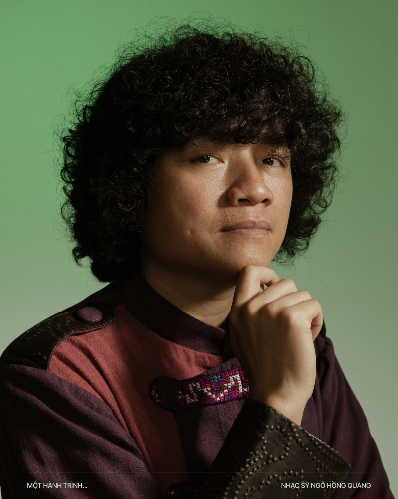
Sức mạnh của âm nhạc truyền thống Việt có những đặc tính nào có thể kết giao với
đương đại và với thế giới?
Âm nhạc truyền thống Việt Nam rất đa dạng. Mỗi một nơi sẽ có cách biểu đạt khác nhau
dựa trên những đường nét hoa mỹ, luyến láy khác nhau để tạo ra sự phong phú và riêng
biệt. Với tôi, chính những sự khác biệt này trong âm nhạc ngũ cung Việt Nam là những đặc
tính thể hiện yếu tố Việt trong mọi sự tương tác và kết hợp.
Một người nghệ sĩ hiểu được vấn đề từ gốc gác, hiểu được những cung bậc đầy cảm xúc mà
người Việt gửi gắm qua từng giọng hát hoặc ngón đàn, thì chắc chắc sẽ làm văn hoá âm
nhạc Việt Nam lan toả rộng, thăng hoa và chạm tới những giá trị tôn vinh cao hơn, không
những trong nước mà còn ở phạm vi thế giới. Nói một cách khác, những thứ có thể làm cho
âm nhạc dân tộc Việt Nam trường tồn và phát triển, đó là yếu tố ngũ cung, yếu tố hoa mỹ,
yếu tố bản địa, yếu tố con người và phải là một tinh thần Việt.
Cách anh hát các làn điệu truyền thống rất lạ. Giọng của anh cũng là một nhạc cụ!
Vậy sự mới lạ này được anh xử lý như thế nào? Anh có tập luyện giọng (hay thể chất)
nhiều để trình diễn được như vậy không, lúc cao, lúc trầm, lúc láy, lúc trong, lúc đục,
lúc thả hơi, v.v.?
Tôi luôn coi giọng hát của mình là một nhạc cụ và khai thác nó hết mức có thể. Bạn có thể
nghe thấy tôi hát vừa quen vừa lạ vì tôi hát một mặt rất truyền thống (tôn trọng sự nguyên
bản của rung nhấn, hoa mỹ), một mặt tôi rất thích sự tự do phóng khoáng trong ngẫu
hứng, nên khi kết hợp cả hai, tôi đã tạo ra được một sự khoáng đạt trong cách trình diễn.
Tôi thực sự đã tìm thấy mình trong những cung bậc âm thanh đó. Đôi lúc là sự nhẹ nhàng
bay bổng, nhiều khi ma mị, ảo diệu nhưng đều hướng tới sự tự do và khoáng đạt.
Tôi hầu như không luyện thanh bao giờ, giọng hát của tôi không sử dụng cách hát cộng
minh, tôi hát như không hát, nghĩa là bộc bạch cảm xúc qua thanh quản với cao độ khác
nhau. Quan trọng nhất vẫn là đủ khoẻ để có hơi dài và sâu, kết hợp với một sự nhận biết rõ
ràng và chuẩn về các không gian âm nhạc mà tác giả đã gửi gắm qua tác phẩm mình thể
hiện. Điều mấu chốt vẫn là cảm xúc và trái tim.
Thông qua các album (Quang, Nam Nhi, Hà Nội Duo, Nhìn lại, v.v.), anh muốn cho âm
nhạc truyền thống đối thoại như thế nào với đương đại?
Các album kể trên đều là các câu chuyện âm nhạc vùng miền của Việt Nam, được gửi gắm
qua lăng kính và ngôn ngữ âm nhạc đương đại của tôi và một số nhạc sĩ mà tôi cộng tác.
Câu chuyện đối thoại ở đây là: tôi muốn cho người nghe trên thế giới thấy được âm nhạc
Việt Nam là gì, như thế nào và có tính tương tác gì. Rất nhiều người trong và ngoài nước
chưa hiểu và không biết âm nhạc Việt ra sao, câu chuyện của tôi là làm sao để họ thấy
được điều đó.
Ngoài việc cần thiết là truyền bá âm nhạc Việt, còn một yếu tố quan trọng khác tôi muốn
gửi gắm, đó là cho khán giả thấy được thế giới âm nhạc đương đại của tôi được biểu hiện
như thế nào trong các tác phẩm truyền thống. Hơn nữa, người nghe còn cảm nhận được tư
duy âm nhạc cởi mở, sẵn sàng đón nhận cái mới hài hoà cùng cái cũ, của những người nghệ
sĩ Việt trẻ như tôi. Tôi luôn nghĩ âm nhạc truyền thống cần được gắn kết và đối thoại nhiều
với những ngôn ngữ âm nhạc khác trên thế giới, để có được sự lan toả rộng hơn, nâng cao
yếu tố truyền thống và đưa hình ảnh, văn hoá đất nước lên những tầm cao và xa hơn.
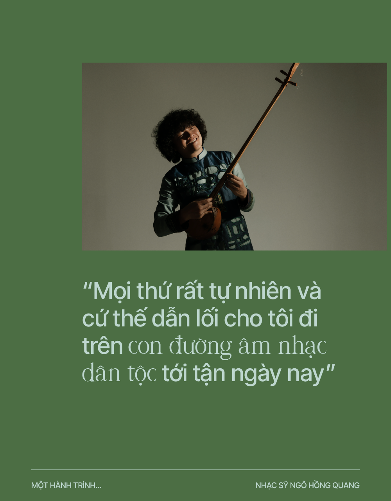
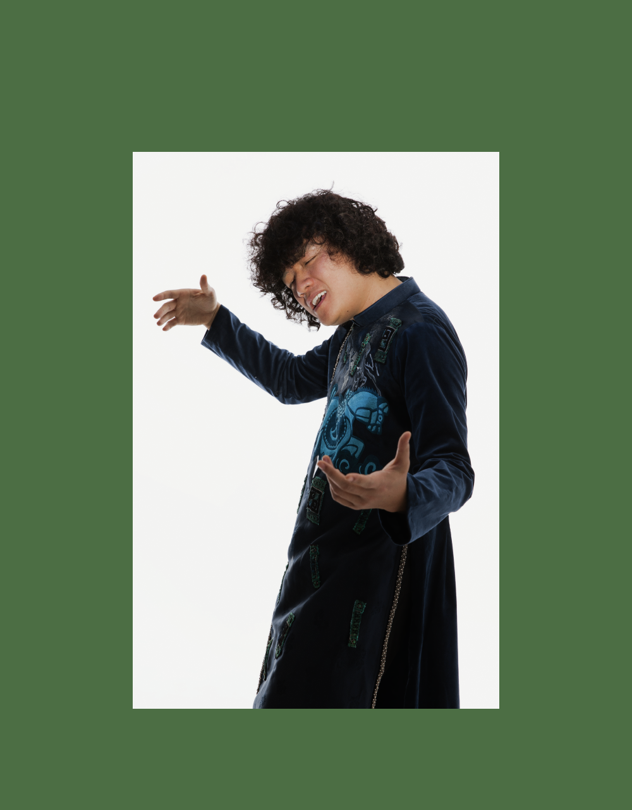
Biểu diễn và sáng tác ở ngoại quốc, anh nhận ra bản thân mình, căn
cước văn hóa Việt và nhạc tính Việt như thế nào so với sự phong phú của
các nền âm nhạc thế giới?
Trong những show diễn ở nhiều quốc gia, tôi thấy rằng việc khẳng định mình là ai, mình
như thế nào, mình phải có cái riêng biệt ra sao là cực kỳ quan trọng. Bỡi lẽ những thứ tôi
đã và đang làm là thể hiện tính dân tộc, thể hiện cái tôi của một nền văn hoá. Khi mình
càng có nhiều điều khác biệt thì mình càng trở nên đặc biệt trong môi trường âm nhạc thế
giới. Mặc dù nhạc ngũ cung đều có ở phần lớn các nước châu Á, nhưng mình cần có một
nhận thức đúng đắn và tôn trọng những giá trị ngũ cung riêng biệt của Việt Nam. Biết nó
có tính phong phú như thế nào, nâng tầm sự đa dạng của nó lên với một tâm thức gìn giữ,
và luôn luôn tìm hiểu những văn hoá âm nhạc vùng miền bằng những chuyến điền dã
hàng năm, sẽ là những yếu tố rất quan trọng trong việc nuôi nấng và phát triển văn hoá
âm nhạc dân tộc Việt. Hiểu và làm được việc này thì âm nhạc truyền thống đất Việt sẽ bay
bổng và khẳng định được căn cước của mình trên thế giới.
Bên cạnh việc nhận biết rõ mình như thế nào, là ai trong thế giới âm nhạc ngũ cung, mình
còn phải khẳng định và học hỏi thêm các nền văn hoá âm nhạc khác của các nước ở những
châu lục khác. Ví dụ như châu Âu thì có nền âm nhạc cổ điển đươc coi như nền văn minh
văn hoá của nhân loại, với những hệ thang âm, âm luật 7 hoặc 12 âm. Ấn Độ thì trong hệ
thống 7 nốt có những vùng miền còn chia ra thành hơn 20 nốt. Rồi có những khu vực châu
Phi hoặc một số nước Trung Á, sự chênh phô của âm chuẩn châu Âu lại là văn hoá âm
nhạc của họ, phù hợp với đặc tính ngôn ngữ cũng như cách biểu đạt cảm xúc của họ.
Có khi nào bản thể của anh và bản sắc âm nhạc của anh bị “lung
lay” hay “lúng túng” trước những đặc sắc đó vì cảm thấy mình
chưa đủ, chưa đạt không?
Trong hành trình âm nhạc của mình, có những lúc tôi chỉ muốn chạy về Việt Nam. Ví dụ
như thời gian đầu đi học âm nhạc đương đại, thực sự là tôi bị rơi vào một môi trường khó
hiểu và shock về cách truyền đạt và giáo dục của họ. Họ thường không bảo mình làm gì
nhưng mình phải có cái gì đó trước khi tới học. Thầy giáo sẽ chờ mình chia sẻ về những gì
mình có, từ đó mới phân tích và đưa ra những ý kiến, luận điểm để phát triển tác phẩm
một cách sâu sắc và rộng hơn. Qua quá trình này thì tôi mới hiểu là họ dạy mình những
phương pháp tiếp cận sáng tác chứ không dạy sáng tác. Sau một thời gian tôi mới thấy rằng
điều này rất bổ ích vì nó đã tạo ra động lực tự phát triển tư duy của sinh viên.
Về phần trình diễn, đôi lúc tôi cũng thấy mình chưa đủ kỹ thuật hoặc lý thuyết âm nhạc để
có thể tham gia những tác phẩm mang tính học thuật. Những gì tôi được học về văn hoá
âm nhạc Việt là sử dụng ngũ cung thành thạo, và áp dụng chuẩn cách luyến láy hoa mỹ
trong từng thể loại. Khi bước vào môi trường nhạc đương đại, jazz, cổ điển hay bất cứ thể
loại ngoại lai nào thì mình thực sự cần bỏ thời gian nghiên cứu, học tâp và rèn luyện
những kiến thức văn hoá âm nhạc mới. Qua quá trình này, tôi thấy mình nhiều khi lúng
túng, nhưng vẫn đủ khả năng để đảm bảo được sự gìn giữ và phát triển âm nhạc Việt trong
âm nhạc thế giới. Quả thực tôi đã học hỏi được rất nhiều kinh nghiệm.
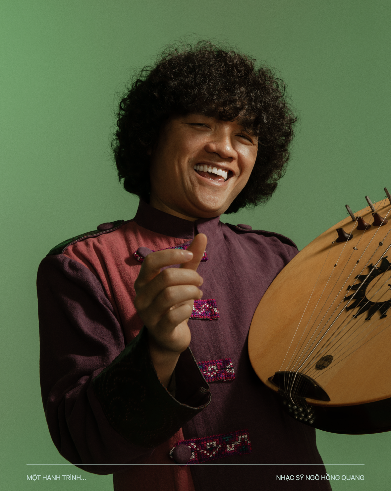
Đâu là những khó khăn khi là một nghệ sỹ độc lập
cả ở Việt Nam lẫn ở ngoại quốc?
Rất nhiều khó khăn để trở thành một nghệ sĩ độc lập. Ở Việt Nam tôi nghĩ là khó hơn vì
phần lớn mọi người chọn sự ổn định trong các cơ quan đoàn thể, nhà hát, v.v.. Điều này đôi
lúc hạn chế việc kết nối và nghệ sĩ khó có thể dành toàn thời gian cho tập luyện và những
dự án riêng. Những nghệ sĩ cá nhân thường phải sống khá vất vả nếu không xin được tài
trợ từ các trung tâm văn hoá, tổ chức quốc tế, hoặc các doanh nghiệp để thực hiện các dự
án độc lập. Có được tài trợ tài chính thì các dự án sẽ được thực hiện một cách dễ dàng hơn
và người nghệ sĩ sẽ toàn tâm toàn sức tập trung vào việc sáng tạo.
Về phân tôi, đôi lúc tôi cũng rơi vào trường hợp tương tự, nhưng may mắn hơn vì tôi là
nghệ sĩ biểu diễn nên có nhiều cơ hội được mời diễn chỗ này chỗ kia, sáng tác âm nhạc cho
dự án này dự án kia thì cuộc sống đỡ vất hơn. Đôi lúc tôi muốn làm dự án của riêng mình,
như vở múa đương đại “Nón”, tôi và nghệ sĩ múa Vũ Ngọc Khải phải tự bỏ tiền ra làm
chương trình đó. Cũng may mắn là show đó chúng tôi hoà vốn. Đây là thực trạng của các
nghệ sĩ độc lập ở Việt Nam. Cuộc sống của họ không đơn giản và dễ dàng như mình nhìn
một bức tranh, hay nghe một tác phẩm âm nhạc của họ trên đĩa CD. Cần có sự quan tâm từ
nhà nước, chính phủ, các trung tâm đoàn thể và doanh nghiệp nhiều hơn nữa, để các nghệ
sĩ độc lập có thể tạo ra một môi trường nghệ thuật dồi dào, giá trị để phục vụ xã hội và
cộng đồng.
Ở nước ngoài, tôi may mắn vì từ lúc bước chân vào trường học đã nhận được học bổng,
nên tôi không gặp khó khăn tài chính mà chỉ là những vướng mắc về văn hoá lúc đầu. Sau
khi tốt nghiệp, tôi làm dự án âm nhạc độc lập, kết hợp với một số nghệ sĩ quốc tế và vẫn
duy trì biểu diễn ở các nước trên thế giới, điều này làm tôi cảm thấy hạnh phúc, vẫn có thu
nhập mặc dù không nhiều để trở thành người giàu có, nhưng thực sự là môi trường bên
nước ngoài khiến tôi thấy an toàn, tự do và độc lập sáng tạo hơn.
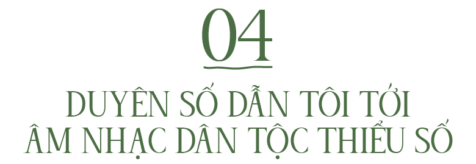
Từ khi quay về Việt Nam (trong giai đoạn Covid), anh tham gia nhiều dự án âm nhạc
cộng đồng, đó là những dự án gì và anh có thể chia sẻ vì sao anh quyết định tiến
hành những dự án đó? Anh đã điền dã ở những vùng miền nào?
Tôi đã tham gia một số dự án trên núi ở các tỉnh như Lào Cai, Lạng Sơn, Hà Giang. Một số dự
án liên quan tới sáng tác các tác phẩm âm nhạc đương đại, dựa trên chất liệu của các dân
tộc sống tại các tỉnh trên. Tôi đã sáng tác vài tác phẩm để các đoàn nghệ thuật chuyên
nghiệp ở các tỉnh miền núi biểu diễn và tham gia hội diễn. Những tác phẩm mang đậm màu
sắc truyền thống và có cả yếu tố đương đại nên được nhiều người đón nhận.
Một số dự án tôi làm việc trực tiếp với nghệ nhân dân tộc thiểu số người Hmong, như
“Nghiêng Say”, là một dự án mà tôi đã dựng và kết nối các tiết mục đặc sắc của người
Hmong sống tại Bắc Hà thành một tác phẩm dài 10 phút, để trình diễn cho bà con và khách
du lịch tới thăm Bắc Hà. Tháng 3 năm 2023, tôi tiếp tục dự án này để phát triển không gian
âm nhạc của họ thành một show diễn thường kỳ, nhằm đón khách du lịch cũng như trình
diễn cho những người quan tâm và yêu văn hoá âm nhạc bản địa.
Tôi làm những dự án này vì tôi yêu văn hoá sắc tộc của vùng Tây và Đông Bắc Việt Nam.
Ngoài việc có được tác phẩm cho họ trình diễn, tôi thấy đây là cơ hội cực kỳ tốt cho sự tìm
tòi và cống hiến của tôi đối với người thiểu số sống trên núi.
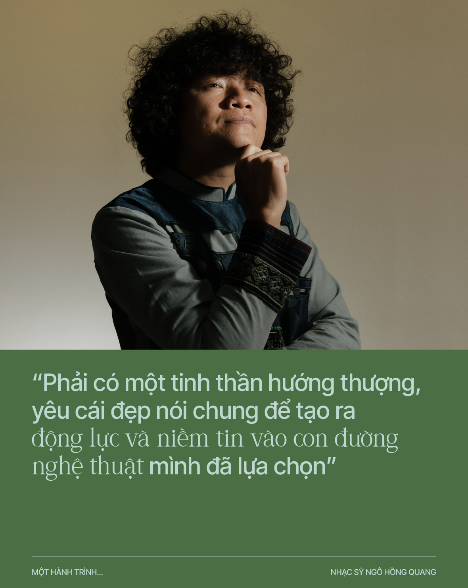
Có những loại đàn hay làn điệu nào được anh “khai quật” không?
Có một số làn điệu hát SLi của người Nùng Cháo, tôi đã dựng thành một tác phẩm hát
Acapella, nghe thú vị và đầy màu sắc. Ngoài ra còn có cả những bài hát tiếng Hmong mới,
tôi phát triển thành tác phẩm “Cái Duyên” và đã đạt huy chương vàng trong đợt hội diễn
năm 2021 cho đoàn nghệ thuật dân tộc tỉnh Lào Cai.
Nếu tôi nói càng ngày con đường âm nhạc của anh càng khiến anh định vị rõ dần lên,
như một nhà âm nhạc dân tộc học và một nghệ sỹ vì cộng đồng, thì anh có đồng ý
không? Điều này đến tự nhiên như “cái duyên” hay hoàn toàn là chủ ý của anh?
Tôi không nghĩ tôi là một nhà âm nhạc dân tộc học vì để trở thành nhà âm nhạc dân tộc
học thì tôi cần nhiều kiến thức hơn nữa về âm nhạc dân tộc. Tôi nghĩ tôi vẫn chưa đủ thời
gian để làm việc đó. Hiện tại tôi chỉ là nghệ sĩ biểu diễn nhạc cụ dân tộc và văn hoá âm
nhạc dân tộc Việt Nam. Là một nghệ sĩ vì cộng đồng thì tôi hoàn toàn đồng ý vì tôi luôn
muốn thực hiện những dự án mang tính cộng đồng, đặc biệt là cộng đồng người thiểu số ở
Việt Nam. Điều này đến với tôi vừa là duyên vừa là mục đích bản thân, nhưng có lẽ phần
lớn vẫn là duyên số dẫn tôi tới đây để thực hiện sứ mệnh văn hoá này. Tôi hoàn toàn vui và
hết mình vì việc này.
Anh sẽ quay lại châu Âu trong năm 2023 chứ? Đó là dự án gì vậy?
Tôi sẽ quay lại châu Âu vào giữa tháng 4 năm 2023 để thực hiện dự án nhỏ về nhạc kịch,
kết hợp giữa các nghệ sĩ sống ở Hà Lan, tôi và một nhà viết kịch người Việt. Theo những gì
đang lên kế hoạch thì dự án sẽ là vở nhạc kịch dài 1 tiếng 30 phút, có sự xuất hiện của tôi
với vai trò là người biểu diễn phần văn hoá âm nhạc Việt Nam.
Trong 5 năm tới, kế hoạch nghệ thuật của anh là gì?
Tôi vẫn mong muốn làm những dự án cho cộng đồng ở Việt Nam. Tiếp tục đi lưu diễn các
nước để quảng bá văn hoá Việt, sáng tác nhiều hơn để ra album mới. Tập luyện thể thao để
có nhiều sức khoẻ. Có thể sẽ là lập gia đình nếu thuận lợi [cười].
Có nhiều văn nghệ sỹ coi dịch chuyển là năng lượng sống và sáng tác. Anh có giống
họ không?
Đúng vậy, mỗi lần đi du lịch hay điền dã là tôi như con nguời khác, ví dụ như lên núi về là
thấy khoẻ hẳn lên. Chắc là do gặp những người mình hàng ngày mong gặp, hít khí trời
trong sạch, ăn đồ ăn ngon và hơn hết là được hoà mình vào không khí, văn hoá bản địa và
trải nghiệm thực sự cuộc sống của họ. Ngoài ra, dịch chuyển ra khỏi Việt Nam cũng tạo cho
tôi nhiều năng lượng sống tích cực hơn, khi nhìn nhận cách sống và tư duy của người nước
ngoài có nhiều cái mới để mình học hỏi. Tôi là người luôn thích dịch chuyển và luôn mong
rằng mình có đủ sức khoẻ để đi được nhiều hơn nữa.
Cô đơn và độc lập là hai trong vài đặc tính làm nên tố chất văn nghệ sỹ (ngoài tài
năng, miệt mài, v.v.). Anh có thấy mình như vậy không?
Tôi là mẫu hình như vậy, từ lúc đi du học tới giờ tôi vẫn cô đơn, vẫn độc lập và vẫn sáng
tạo. Một cách tự nhiên thôi chứ tôi không đang cố gắng là như vậy. Đây là điểm đặc biệt
cần có để tạo nên người nghệ sĩ, tôi nghĩ vậy!
Có lần anh nói “cái ý tạo ra cái khí”, điều này thể hiện như thế nào trong
hành trình sống và hành trình nghệ thuật của anh?
Tôi luôn dùng câu này làm kim chỉ nam cho hành trình sống của mình. Việc mình sống và
không có mục tiêu thì cuộc sống trở nên thật vô định và nhạt nhẽo. Mỗi lần có năng lượng
và ham thích một điều gì đó, một mục đích gì đó, thì tôi luôn nghĩ về điều đó và đặt ra
những kế hoạch thực tập với những mục tiêu đó. Việc này không những tạo ra những năng
lượng mang tính dẫn lối và đưa mình tới những đích đó, mà còn tạo ra những cảm xúc
hưng phấn cho cuộc sống và hành động của mình. Ý niệm là như vậy và tôi luôn sống và
hành động theo nó. Gần như 100% mục đích của tôi đều đạt được vì tôi tin vào niềm tin và
sức mạnh của ý chí.
Tôi có 12 năm để mong ước trở thành giảng viên Nhạc Viện Hà Nội, nuôi nấng ý tưởng này
và thường nghĩ về nó rồi cuối cùng tôi cũng đã là giáo viên. Mong muốn được đi du học,
một mục tiêu dường như không thể, vì tôi không biết tiếng Anh. Với ý chí bền vững này, tôi
tự học tiếng Anh và vượt qua được kỳ thi Ielts đủ điểm để lên đường đi học và sau đó còn
được cấp học bổng. Những ví dụ này cho thấy, khi mình luôn tập trung và hướng tới những
mục đích cụ thể, đầy mong muốn của mình, thì chắc chắn mình sẽ được dẫn tới đó bởi
nhiều nguồn năng lượng khác nhau từ mọi nơi.
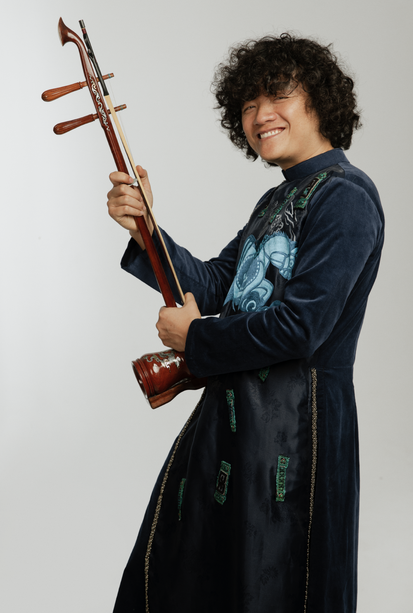
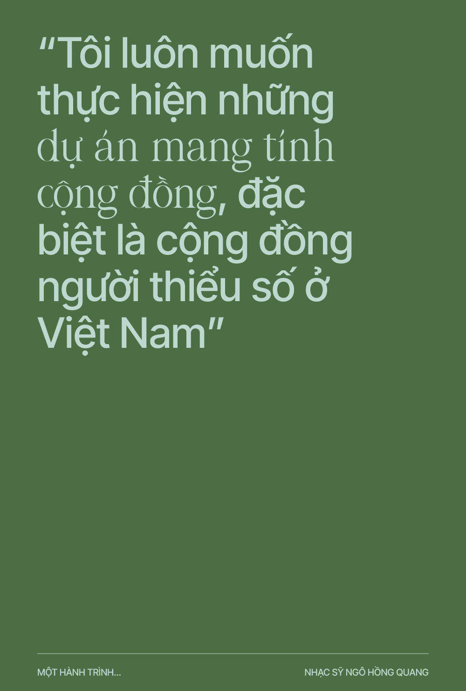
Đâu là những điều kiện để một thanh niên Việt hay một nghệ sỹ Việt xuất ngoại thành công,
trong công việc nói chung hay sự nghiệp nghệ thuật nói riêng?
Tôi muốn tập trung vào câu chuyện của một nghệ sĩ xuất ngoại thành công. Không riêng gì
âm nhạc, các môn nghệ thuật khác cũng vậy. Để thành công trên đất khách, người nghệ sĩ
thực sự phải mang trong mình một số yếu tố quan trọng đáng kể như sau.
Một là, phải có một tinh thần hướng thượng, yêu cái đẹp nói chung để tạo ra động lực và
niềm tin vào con đường nghệ thuật mình đã lựa chọn. Khi đi trên con đường nghệ thuật
đầy chông gai mà lơ là, không đủ sự chú tâm vào công việc cũng như sáng tạo, thì không
việc gì có thể hoàn thiện được. Yêu cái đẹp hay hướng tới sự cao thượng của những giá trị
cao đẹp trong nghệ thuật, là động lực vô cùng to lớn để giúp người nghệ sĩ thành công với
sự lựa chọn của mình.
Hai là, phải luôn là người cởi mở, sẵn sàng đón nhận cái mới và tôn trọng cái cũ. Nếu là
một nhạc sĩ hoặc một hoạ sĩ chẳng hạn, tôi luôn nghĩ, người nhạc sĩ, hoạ sĩ này sẽ thành
công trọn vẹn hơn nếu mang trong mình văn hoá Việt, và biết cách sáng tạo cái mới mang
tính quốc tế dựa trên những yếu tố Việt. Điều này rất quan trọng và tôi đã nhìn thấy có rất
nhiều nghệ sĩ thành công trong việc sử dụng và kết hợp hai yếu tố này. Người thưởng thức
nghệ thuật nước ngoài, thường quan tâm và thích thú nhiều hơn với những gì đầy tính
sáng tạo đương đại mà lại rất đậm chất ngoại lai.
Ba là, cần rèn luyện chuyên cần về cả thể chất lẫn tinh thần, để có được một cuộc sống
khoẻ mạnh và sáng tạo. Bạn sẽ không thể tồn tại và làm được điều gì cho nghệ thuật nếu
bạn có một thể trạng yếu và một tinh thần không tốt. Mỗi tác phẩm nghệ thuật được sáng
tạo là chứa đựng biết bao là sức lực và chất xám, nếu tác phẩm hay và thành công nghĩa là
bạn đã và đang dồi dào sinh lực, cũng như sự tập trung để tạo ra tác phẩm đó. Hãy luôn là
con nguời khoẻ mạnh, một trong những yếu tố rất quan trọng của một người nghệ sĩ sống
xa nhà.
Yếu tố cuối cùng, nhưng không hề kém phần quan trọng trong việc đưa một người nghệ sĩ
trở nên thành công hơn ở nước ngoài, đó là tính sáng tạo cá nhân. Bạn muốn sáng tạo tốt,
trước tiên bạn cần phải là người biết tạo ra cái khác biệt. Việc tạo nên một tác phẩm có cá
tính, sẽ tạo nên dấu ấn quan trọng đầu tiên trong việc định hình tên tuổi một người nghệ
sĩ. Khi bạn có cái riêng rồi, thì người xem và thưởng lãm tác phẩm mới đi sâu vào thế giới
sáng tạo của bạn. Đôi lúc sẽ vì sự đam mê và chìm đắm trong tác phẩm của bạn mà người
thưởng thức có thể mua tác phẩm với những giá trị rất cao, khi đó bạn sẽ trở nên giàu có
và trở thành người nổi tiếng.
Hãy luôn là người nở nụ cười, tích cực, yêu nghệ thuật đích thực, tự do, cởi mở đón nhận
cái mới, biết yêu giá trị truyền thống và luôn phải là người tiên phong tạo ra cái riêng biệt
trong sáng tạo.
Chúc anh sức khỏe và luôn dồi dào năng lượng sáng tạo! Hẹn
gặp lại anh ở những dự án và sáng tác mới!
PARIS – HÀ NỘI, THÁNG 3 NĂM 2023
Thực hiện: THỤY PHƯƠNG Hình ảnh: DO NHÂN VẬT CUNG CẤP. BẢN QUYỀN ẢNH THUỘC VỀ NGÔ KHÔI.
Đồ họa: DƯƠNG PHƯƠNG THANH, RBʼ PIP